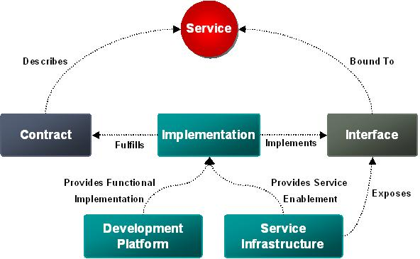
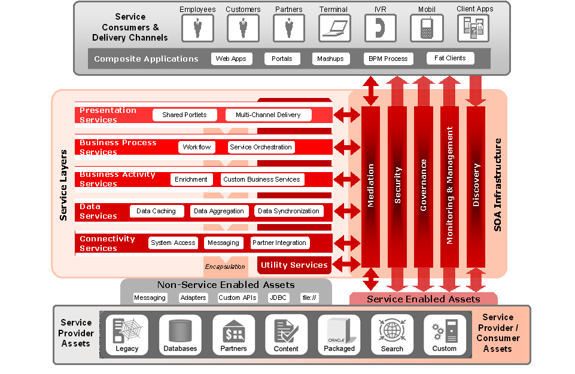
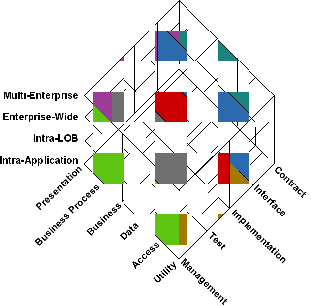
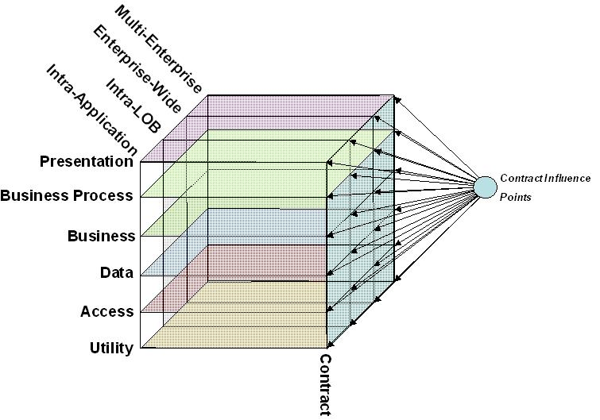
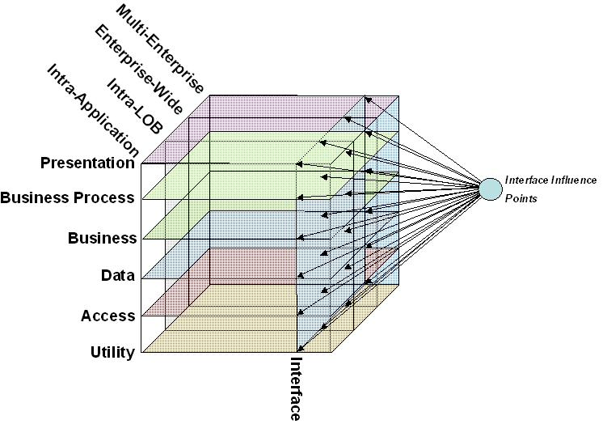
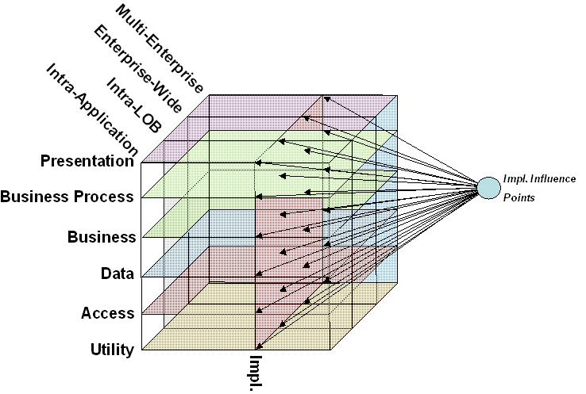
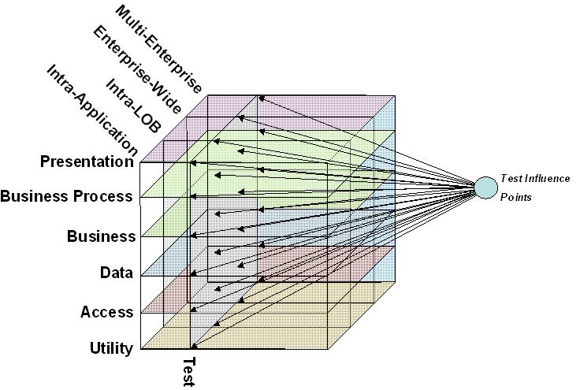
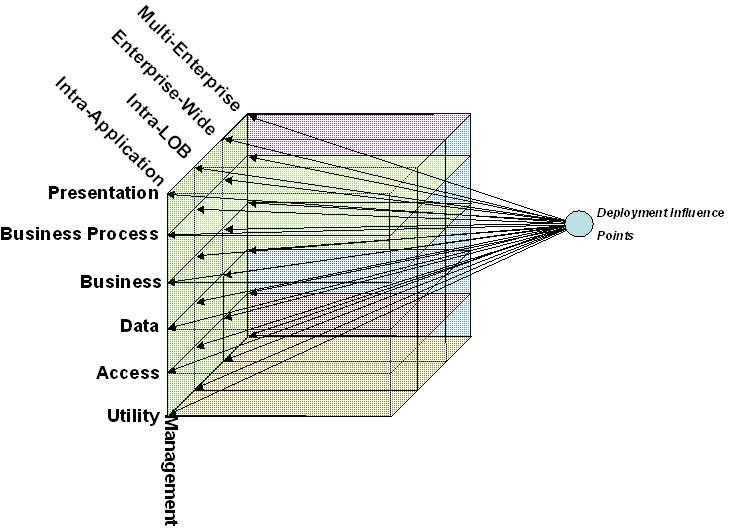

OUM |
Technique Overview |
||
Method Navigation |
Current Page Navigation |
||
|
|
||||||||
The purpose of this technique is to provide guidance for SOA practitioners to gain a basic understanding of services. It does not define a SOA Reference Architecture, but defines the baseline definition of services as used throughout OUM. In addition a technique is introduced to manage and maintain architectural policies to standardize service design and reduce integration efforts.
Service Architecture provides the guidelines and best practices that are specifically required to enable effective and consistent service engineering. It provides the foundation from which services are built, and is a fundamental component of an enterprise SOA Reference Architecture.
Service Architecture plays a guiding role, primarily throughout the Service Delivery area of service engineering. It guides the principles that should be applied to all services, as well as services of specific categories. The collateral that an enterprise develops around service architecture is the most flexible, and is an area where several enterprises will deviate based on their specific SOA needs and goals. Therefore, there is no single set of best practice guidelines around the area of service architecture that will apply to all enterprises.
Any enterprise should define a baseline for service engineering. Therefore the SOA Reference Architecture needs to be reviewed to check if the basic terminology is defined, and if it includes architectural policies to standardize service design and implementation. If that is not the case, a workshop should be conducted with the enterprise architects to agree on the basic terminology and collect needed architectural policies.
Service Architecture - The result of this technique is a collateral that defines the Service Architecture appropriate for the customer situation, including the Service Definition, a SOA Taxonomy and Service Architecture Polices. This collateral may reuse most of the sections in this techniques document, naturally adjusted according to the customer situation.
No. |
Step | Component | Component Description |
|---|---|---|---|
1 |
Define the term, service. | Definition of a Service | The Definition of a service is the actual textual definition of how a service is interpreted in the enterprise. |
2 |
Determine SOA Taxonomy. | SOA Taxonomy | The SOA Taxonomy is a definition on how the services will be classified in the enterprise. If an enterprise repository is used, this taxonomy is typically used to organize the services in the repository. |
3 |
Determine Service Architecture Policies. | Service-Architecture Policies | The Service-Architecture Polices determines the polices that the services should adhere to. Once policies are created and being used, maintaining them will have an impact on already existing services. In that case dependent assets will need to be analyzed to decide upon a migration strategy to the new policy version. |
A service can be described as a way of packaging reusable software building blocks to provide functionality to users and to other services.
The following definition is the definition of a SOA service as used by OUM. Different enterprises may have another definition. Whatever definition is used by the enterprise needs to be documented and all participants in SOA need to be familiar with it in order to ensure consistent service engineering.
A SOA service is a means of packaging reusable software building blocks to provide functionality to users, applications, or other services; it is an independent, self-sufficient, functional unit of work that is discoverable, manageable, measurable, has the ability to be versioned, and offers functionality that is required by a set of consumers. A service may be shared, which means that the function offered by the service is intended for multiple consumers, some known, and others that have not yet been identified.
A logical definition of a service as used in OUM consists of three components: A Contract, its Interface and the Implementation. A service is defined by its most current version, of each component. The illustration below depicts the components of the service, and their relationships as defined by OUM.

Warning: In the enterprise, some entities may be called services while not meeting this definition, for example, services without a contract or not reusable. In that case, the "service" is not a service in scope of SOA, i.e., not a SOA service.
A SOA service is defined by its most current contract, interface and implementation (i.e., the latest version). Multiple versions of the same service may exist in an operational status and may be used by different consumers, but this is simply to facilitate the deprecation of the old service version. All future versions should stem from the most current contract, interface and implementation. This history with respect to the evolving contract, interface and implementation is still maintained within the service. When this service is discovered for reuse, its “current” version is discovered and not any previous version.
A service in the scope of SOA will be governed as a separate entity. Therefore, services need to be published to a repository, providing information needed to discover the service by possible new consumers. In addition, a service should provide a means to be measured to enforce contracts.
SOA services do not replace components. Instead, it is a good practice to design services using components. A service can be built by one or more components. On the other hand, not every component needs to be part of a service, but can be part of a packaged application instead. Of course, introducing SOA does not imply redesigning all applications with services, but functionality that could be shared with other consumers should be provided as a SOA service; a separate entity on its own allowing for easy reuse. Implementing or exposing a functionality as a SOA service creates additional overhead that should only be introduced if it brings value.
The service contract specifies the purpose, functionality, constraints and usage of a service. The usage of the functionality embodied by a service is governed by a contract. A contract is made up of functional and supplemental aspects.
The functional aspect of a contract describes the behavior of available operations according to the role of the service consumer. It should be defined in business terms. The description is mainly used by possible new consumers to understand if they could use the service to solve their problem. If the service solves a technical rather than a business problem (for example, a connectivity problem) then the contract is defined in IT business terms, i.e., in technical terms.
Contracts also specify supplemental dimensions of service usage, such as: security requirements, semantics, transaction requirements, invocation style, quality of service, etc. This content, though technical, must be provided in a human consumable format.
The primary purpose behind the contract is to provide a human readable specification for the service, which will facilitate reuse.
Think of a contract to be the side letter for the usage agreements with all consumers. While the contract defines the service offering part, the usage agreement will define the individual agreement with each consumer on the terms and conditions for the usage of the service, e.g. the individual load created by the consumer.
Note: You can find details about how to represent and model services in the Service Modeling technique.
A service interface provides the means for the users and consumers of a service to access its functionality according to the contract it offers. The interface must be considered to be a standard with respect to the enterprise’s SOA. This does not mean that the interface must be an industry standard, but rather a standard identified within the Service Architecture, as an acceptable interface standard to be used within the SOA. Interface standards may vary depending on the categorization of the service, e.g., depending on the logical layer in the Reference Architecture.
The interface provides the physical means for consumers to access the service. Service interfaces may be reused at design time, but only a single instance of an interface can be bound to a particular service. This simply means that two services will not share the same runtime interface bindings, but may reuse the same physical interface specification.
The implementation is the technical realization of an interface and the remainder of the service contract. The implementation part of a service is the actual code, application interface or other technology assets containing functionality needed to provide the service to the enterprise.
The implementation may be accomplished using any technology. Sometimes it is possible to reuse implementations already existing. But for maintenance purpose and to reduce the burden on integration it is important to standardize implementation technology to a set the enterprise intends to support going forward.
The implementation of a service consists of two components. The first is the development platform, which often enhances the developed code by standard frameworks and other capabilities. The Service Infrastructure side typically provides the service enablement capabilities for the implementation, like handling SLA enforcement, security, data formatting, and others. Service infrastructure should be utilized when possible, as it reduces the burden on service providers, from an implementation standpoint. All of the capabilities, functional, and supplemental, traditional, or service enablement, must be specified in the service contract.
Services can be categorized in multiple fashions. And service can be consumed and provided by applications as well. The following section discusses the basic categories needed for service engineering.
Whichever common taxonomy was defined for the enterprise repository, all SOA-related assets should include the categorization against those common taxonomies. In a top-down service identification approach, it is important to provide a business-related taxonomy as introduced in the IT Asset Management technique. This creates a folder-like structure to organize SOA assets along the Enterprise Function Model.
All SOA related assets need to be linked to the relevant folders in the business category, and thereby provide service portfolio management with an easy mechanism to discover existing assets and to organize new ones.
The intended breadth of the consumer audience for a service defines its scope. The scope category typically implies special supplemental requirements e.g. regarding security, quality of service and sometimes even the data language used in the interfaces.
In general there are four primary scope categories that should be provided with the description of a service. But the list may depend on the enterprise and may need to be adjusted to local terminology.
Multi-Enterprise - Multi-enterprise services are those that will be exposed outside of the hosting enterprise and may be called by other external users such as external companies, suppliers, and customers.
Enterprise-Wide - Enterprise wide services are available to qualified consumers throughout the enterprise. These services are not exposed to consumers outside the enterprise.
Intra-Line of Business (LOB) - Intra-LOB services are those that are not available outside of the Line of Business for which they were created. External LOBs calling this type of services by exception is acceptable, but need to be controlled by the LOB. If the number of consumers grows significantly outside of the LOB, re-scoping the service should be considered.
Intra-Application - Intra-Application services are those services that are not intended to be called outside of the scope of a given application. Typically, these services are not hosted in a shared service environment but with the application itself.
Typically a SOA Reference Architecture builds on the preferred n-tiered application design approach by categorizing services by their functional purpose. Just as components in an application would follow a model-view-controller pattern, services in an enterprise may represent data, presentation, and business functions. A layered model helps to organize the functional requirements of a business in terms of reusable services.
Each layer typically requires different service qualities. These qualities do not only affect the service contract, but the interface, implementation, and sometimes even the testing and deployment procedures. Often the layers are linked to physical shared hosting systems, adding operational requirements for deployment and monitoring.

The set of logical layers and their names may vary across the enterprises. The following list is an example structure of layers as recommended in Oracle Fusion Reference Architecture (OFRA):
Presentation - Presentation services provide a user interface to their consumers. In most cases these services are exposed directly to human consumers.
Business Processes - Business Process services represent a reusable sub-processes defined by the business. The process represents the flow and decision making processing of moving between distinct business activities. The activities themselves are commonly implemented outside the scope of the process service itself as independent services.
Business Activity - A business activity service represents the functions of a business activity that cannot be broken down any further from a business context. These services represent reusable business services defined by IT regardless of implementation style or function.
Data - A data service exposes data to its consumers for both access and manipulation in a format that is digestible by the business.
Connectivity - A connectivity service exposes the functions of a legacy system as services in a SOA environment. It provides a means to bridge application technologies with SOA.
Utility - A utility service provides generally reusable function outside of any particular business context. Typically, these services perform infrastructure-related functions, such as, security (credential mapping, access control, auditing), logging, notification, policy lookup, transaction watermarking, etc.
Both scope and layer have an equal amount of influence on the service contract, interface, implementation, test strategy, and management strategy.

The illustration above represents a three-dimensional matrix that, if completed, it would provide the influencing factors any combination of scope and layer will have on the components of the service as well as the test and management strategies. This section breaks down the matrix into two-dimensional tables, mapping layers against scope, and provides the influence the combination has against contract, interface, implementation, test and deployment.
Each table should be worked through with the enterprise architects to determine the specific influence each combination will have on services. Please take the tables provided in this document as a starting point. After having initially reworked the tables, each bullet should be that precise, that they can be added as an architectural policy to Enterprise Repository. Once policies are created and used, maintaining them will have an impact on already existing services. In that case dependent assets will need to be analyzed to decide upon a migration strategy to the new policy version.
The illustration below depicts the influence points that affect the service contract.

Each point should examine the following areas and provide specific contract guidance:
Risks - Identify the risks of exposing a service of the given layer at the given scope. What standards should be enforced in the contract to mitigate these risks?
Quality of Service (QoS) - What are the standard set of non-functional requirements for services of this layer and scope?
Invocation Strategy - Given the layer and scope, consider standardization around the invocation strategies that are acceptable. In particular what strategies are acceptable for consumers to bind to the interface? Loosely coupled, tightly coupled, etc.
Security Considerations - What security standards/requirements should be applied to services in this layer and scope?
Service Enablement - What service enablement standards/requirements should be applied to services in this layer and scope? Examples include transaction support, management, SLA monitoring and enforcement, etc.
Data Considerations - Define any standards around how services in the given layer and scope are required to handle data. Examples include standards around data security and data classifications (public, private, secret, etc.).
Transaction Support - Define any transaction management strategies for services of the given layer and scope. Examples: idempotent vs. non-idempotent, coordination requirements, etc.
Contract standards should be developed around these focus areas within the enterprise for services matching the provided scope and layer. For each standard an architectural policy can be registered in the Enterprise Repository. By classifying a service against scope and layer, the proper policies can automatically be associated with them.
The table below illustrates the influence areas that should be given more focus with respect to the service contract. The items listed in the table below represent a set of contract considerations that may be used as an example.
Layer |
Multi-Enterprise |
Enterprise-Wide |
Intra-LOB | Intra-Application |
|---|---|---|---|---|
Presentation |
Denial of Service Prev. 30 second timeout Encrypt data classified as private No access to data classified as secret |
30 second timeout Encrypt data classified as private or secret |
Encrypt data classified as private or secret | |
Business Process |
Authentication and authorization required All requests must be logged for audit purpose. Clearly defined and measurable SLAs around each business activity. Loosely coupled |
Authentication and authorization required All requests must be logged for audit purpose. Clearly defined and measurable SLAs around each business activity. Loosely coupled |
Authentication and authorization required All requests must be logged for audit purpose. Clearly defined and measurable SLAs around each business activity. Loosely coupled |
|
Business |
Denial of Service Prev. Idempotent Input Validation Encrypt data classified as private. Clearly defined and measurable SLAs. Loosely coupled No access to data classified as secret |
Idempotent Input Validation Encrypt data classified as private. Clearly defined and measurable SLAs. Loosely coupled |
Input Validation Encrypt data classified as private. Clearly defined and measurable SLAs. Loosely coupled |
|
Data |
Denial of Service Prev Read-only All requests must be logged for audit purposes. Clearly defined and measurable SLAs. Loosely coupled Encrypt data classified as private No access to data classified as secret |
Idempotent All requests must be logged for audit purposes. Clearly defined and measurable SLAs. Loosely coupled Encrypt data classified as private |
Clearly defined and measurable SLAs. Loosely coupled Encrypt data classified as private No access to data classified as secret |
|
Access |
Denial of Service Prev All requests must be logged for audit purposes. Clearly defined and measurable SLAs. Loosely coupled Encrypt data classified as private No access to data classified as secret |
Clearly defined and measurable SLAs. Loosely coupled Encrypt data classified as private |
Loosely coupled Encrypt data classified as private |
|
Utility |
Not applicable |
The illustration below depicts the influence points that affect the service interface.

Each point should examine the following areas and provide specific interface guidance:
Interface Style - What interface standards and styles should be applied to a service of the given layer and scope? Interface styles include: Web, Document Style, RPC Style, etc.
Quality of Service (QoS) - What standards/guidelines need to be followed for interfaces in the given layer and scope to maximize QoS?
Protocol and Transport - Which protocol and transport standards/guidelines should be applied to a service in the given layer and scope?
Interface standards should be developed around these focus areas to ease integration. Take the following table as a starting point and adjust it to the needs of the enterprise. The items listed in the table below represent a set of interface considerations that may be used as an example.
Layer |
Multi-Enterprise |
Enterprise-Wide |
Intra-LOB | Intra-Application |
|---|---|---|---|---|
Presentation |
WSRP |
WSRP |
Portlet | |
Business Process |
Document Style SOAP over HTTPS |
Document Style SOAP over HTTP |
Document Style |
Document Style |
Business |
Document Style POX over HTTPS |
Document Style POX over HTTP |
RPC / Document Style SOAP / POX over HTTP |
|
Data |
Document Style SOAP over HTTPS |
Document Style Standard Protocols and Transports Enterprise Data Representation Loosely coupled |
RPC / Document Style Standard Protocols nd Transports Loosely coupled |
RPC style Fine grained Tightly coupled |
Access |
Document / RPC Style SOAP over HTTPS |
Document Style Standard Protocols and Transports Enterprise Data Representation Loosely coupled |
RPC / Document Style Standard Protocols nd Transports Loosely coupled |
RPC style Fine grained Tightly coupled |
Utility |
Not applicable |
The illustration below depicts the influence points that affect the service implementation.

Each point should examine the following areas and provide specific implementation guidance:
QoS - Define any QoS related implementation guidelines for services of the given layer and scope. Examples may include, caching guidelines, enablement standards, security constraints, logging/audit standards, etc.
Validation Logic - Define any validation guidelines for service implementation in the given layer and scope.
Service Access as a Consumer - Define any rules and guidelines required for services in the given scope and layer with respect to the role of service consumer. This includes restrictions on access, etc.
Error Conditions - Specify any specific guidelines for service implementations in the given layer and scope regarding error condition management.
Platform - Define any technology standards required to be utilized for implementing services in the given scope and layer.
Coding Standards - Define any specific coding standards and guidelines that must be adhered to for services in the given scope and layer.
Implementation standards should be developed around these focus areas within the enterprise to harmonize service implementation. Services that are hosted on shared infrastructure need clear guidelines to enable side-by-side deployment with minimal impact on each other. Sometimes the guidelines need to ensure the usage of common libraries in the same version to prevent collisions on deployment.
Take the following table as a starting point and adjust it to the needs of the enterprise. The items listed in the table below represent a set of implementation considerations that may be used as an example.
Layer |
Multi-Enterprise |
Enterprise-Wide |
Intra-LOB | Intra-Application |
|---|---|---|---|---|
Presentation |
Validation prior to submit Access to other Multi-Enterprise Services only |
Validation prior to submit Access to other Multi-Enterprise Services only |
No access to Intra-Application services | |
Business Process |
Validate early Unexpected error condition handling Access to only other Multi-Enterprise Services |
Validate early Unexpected error condition handling Access to only other Multi-Enterprise Services |
Validate early Unexpected error condition handling No access to Intra-Application services |
Validate early Unexpected error condition handling |
Business |
SLA Monitoring Validate Early Access to only other Multi-Enterprise Services |
SLA Monitoring Validate Early Access to only other Enterprise-Wide and Multi-Enterprise services |
No access to Intra-Application services |
|
Data |
SLA Monitoring Caching Access to only other Multi-Enterprise Services |
SLA Monitoring Caching Access to other Enterprise-Wide and Multi-Enterprise services |
SLA Monitoring No access to Intra-Application services |
|
Access |
SLA Monitoring Caching Access to only other Multi-Enterprise Services |
SLA Monitoring Caching Access to other Enterprise-Wide and Multi-Enterprise services |
SLA Monitoring No access to Intra-Application services |
|
Utility |
Not applicable |
The illustration below depicts the influence points that affect the service test strategy.

Each point should examine the following areas and provide specific test guidance:
Risks - Define any specific test strategies to mitigate risks against services in the given scope and layer.
QoS - Define a specific test strategy to ensure appropriate non-functional requirement conformance for services in the given scope and layer.
SLA - Define guidelines on performance and load testing.
Message Formats - Define specific test strategies for testing invalid message formats and the appropriate output against services in the given scope and layer.
Message Contents - Define specific test strategies for testing invalid message contents and the appropriate output against services in the given scope and layer.
Exception Conditions - Define any specific test strategies required for services in the given scope and layer around testing exception conditions.
Security - Define any specific test strategies required for services in the given scope and layer regarding security enforcement.
Test strategy standards should be developed around these focus areas within the enterprise for services matching the provided scope and layer. The items listed in the table below represent a vague set of test considerations that may be used as an example.
Layer |
Multi-Enterprise |
Enterprise-Wide |
Intra-LOB | Intra-Application |
|---|---|---|---|---|
Presentation |
Denial of Service Exception cases Security Message Contents Message Formats |
Exception cases Security Message Contents Message Formats |
Message Contents Message Formats |
|
Business Process |
Denial of Service Exception paths Security Message Contents Message Formats |
Exception paths Security Message Contents Message Formats |
Exception paths Message Contents Message Formats |
Message Contents Message Formats |
Business |
Denial of Service Security Message Contents Message Formats |
Security Message Contents Message Formats |
Message Contents Message Formats |
|
Data |
Denial of Service Security Message Contents Message Formats |
Security Message Contents Message Formats |
Message Contents Message Formats |
|
Access |
Denial of Service QoS Security Message Contents Message Formats |
QoS Security Message Contents Message Formats |
QoS Message Contents Message Formats |
|
Utility |
Not applicable |
The illustration below depicts the influence points that affect the service management strategy.

Each point should examine the following areas and provide specific deployment guidance:
Infrastructure Isolation Level - Define any hosting infrastructure guidelines to be followed when deploying services in the given scope and layer.
Deployment Unit - Define any deployment unit guidelines to be followed when planning the deployment of the service in the given layer and scope. These guidelines should include co-deployment considerations with other services.
QA&M - Define any standard OA&M procedures that are necessary for services in the given scope and layer including strategies for:
- Consumption Control
- Collecting measurement data
- Monitoring conformance for both runtime and design time activities
Security - Define any security guidelines for the hosting infrastructure for services in the given scope and layer.
SLA - Consider hardware, data center redundancies, etc.
Management standards should be developed around these focus areas within the enterprise for services matching the provided scope and layer. The items listed in the table below represent a set of implementation considerations that may be used as an example.
Layer |
Multi-Enterprise |
Enterprise-Wide |
Intra-LOB | Intra-Application |
|---|---|---|---|---|
Presentation |
Deploy separate from mission critical infrastructure Isolated Deployment Units Monitored and Managed by Infrastructure Schemas hosted Locally |
Deploy on enterprise-wide shared service infrastructure Isolated Deployment Units Monitored and Managed by Infrastructure Schemas hosted Locally |
Deploy on LOB shared service infrastructure Monitored and Managed by Infrastructure Schemas hosted Locally |
Deploy with application Schemas hosted Locally |
Business Process |
Deploy separate from mission critical infrastructure Isolated Deployment Units Monitored and Managed by Infrastructure Schemas hosted Locally |
Deploy on enterprise-wide shared service infrastructure Isolated Deployment Units Monitored and Managed by Infrastructure Schemas hosted Locally |
Deploy on LOB shared service infrastructure Monitored and Managed by Infrastructure Schemas hosted Locally |
Deploy with application Schemas hosted Locally |
Business |
Deploy separate from mission critical infrastructure Isolated Deployment Units Monitored and Managed by Infrastructure Schemas hosted Locally |
Deploy on enterprise-wide shared service infrastructure Isolated Deployment Units Monitored and Managed by Infrastructure Schemas hosted Locally |
Deploy on LOB shared service infrastructure Monitored and Managed by Infrastructure Schemas hosted Locally |
Deploy with application Schemas hosted Locally |
Data |
Deploy separate from mission critical infrastructure Isolated Deployment Units Monitored and Managed by Infrastructure Schemas hosted Locally |
Deploy on enterprise-wide shared service infrastructure Isolated Deployment Units Monitored and Managed by Infrastructure Schemas hosted Locally |
Deploy on LOB shared service infrastructure Monitored and Managed by Infrastructure Schemas hosted Locally |
Deploy with application Schemas hosted Locally
|
Access |
Deploy separate from mission critical infrastructure Isolated Deployment Units Monitored and Managed by Infrastructure Schemas hosted Locally |
Deploy on enterprise-wide shared service infrastructure Isolated Deployment Units Monitored and Managed by Infrastructure Schemas hosted Locally |
Deploy on LOB shared service infrastructure Monitored and Managed by Infrastructure Schemas hosted Locally |
Deploy with application Schemas hosted Locally
|
Utility |
Deploy separate from mission critical infrastructure Isolated Deployment Units Monitored and Managed by Infrastructure Schemas hosted Locally |
Deploy on enterprise-wide shared service infrastructure Isolated Deployment Units Monitored and Managed by Infrastructure Schemas hosted Locally |
Deploy on LOB shared service infrastructure Monitored and Managed by Infrastructure Schemas hosted Locally |
Deploy with application Schemas hosted Locally
|
There are no templates available to assist with this technique.
This technique is recommended for use in the following OUM tasks:
| Task | Usage |
|---|---|
| Review this technique as input into this task. | |
| Use this technique to assist in developing Enterprise Standards and guidelines for Service Architecture. | |
| Use this technique to provide clarity to the SOA Layering Architecture. | |
| Review this technique as input into this task. | |
| Review this technique as input into this task. | |
| Use this technique to capture details about each service for the Services Meta Model. | |
| Use this technique to provide the architecture around the service components. | |
| Use this technique to define requirements for the SOA Reference Architecture. | |
| Use this technique to assist in developing the Design Architecture description as related to SOA. | |
| Use this technique to design the services within the defined service architecture. |
Use the following criteria to check the quality of this technique:

Copyright © 2006, 2016, Oracle and/or its affiliates. All rights reserved.